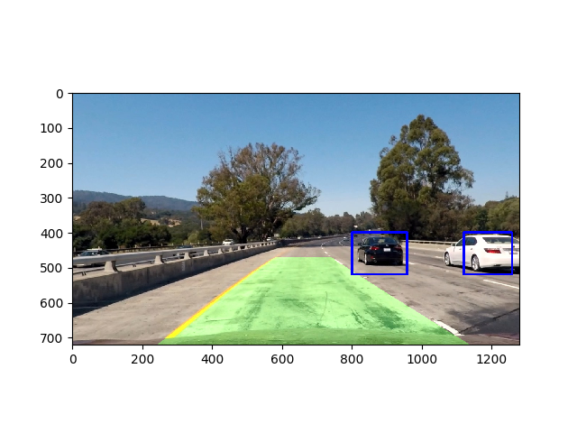

Vehicle Detection Project
The goals / steps of this project are the following:
The code of training calsisfier is in the file Vehicle_Identifier.py and using functions from file lesson_functions.py. I’ve took car/noncar *.png images and sort them by name. Extraction of HOG features is in the function get_hog_features file lessons_functions.py lines 9-26.
I started by reading in all the vehicle and non-vehicle images. Here is an example of one of each of the vehicle and non-vehicle classes:
I then explored different color spaces and different skimage.hog() parameters (orientations, pixels_per_cell, and cells_per_block). I grabbed random images from each of the two classes and displayed them to get a feel for what the skimage.hog() output looks like.
Here is an example using HOG parameters of orientations=9, pixels_per_cell=(8, 8) and cells_per_block=(2, 2):
I tried various combinations of parameters and find the best performance of HOG with following parameters: orientation 9, pixel per cell 8 and cell per block 2. I’ve used all HOG 3 channels for training classifier.
I trained classifier using file Vehicle_Identifier.py: linear SVM was used with splitting all images (>8000 cars and >8000 not cars) in the proportion 7/3 between training and testing dataset. I’ve used spatial beam features (spatial size (64, 64)) and colour histogram in YCrCb colour space (32 histogram beans).
Sliding window function is slide_window() in the file Vehicle identifier.ipynb. 64*64 image size was used and 0.5 overlap. Those parameters shows acceptable results and are consistent with training images dataset dimensions.

Examples of my pipeline on the test images are shown below. There are some issues with identification of white cars in some examples, but in general the pipeline works well. I’ve tried different features, HOG channels, colour spaces, scanning window size etc…



Here’s a link to my video result
I’ve used heat map techniques and implemented it in the scope of my pipeline in the function filtered_boxes() file Vehicle_Identifier.py. Below is example of heat map and corresponding reduction of false positive detections.
My pipeline is failing in the case of white car. Increase of training dataset size for classifier could help to solve it. As well there is an issue with detection of different size vehicles and subsampling of bigger size window by HOG features could help to solve it.